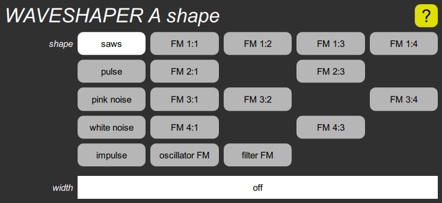

WAVESHAPER shape cluster

This contains the shape parameter, which selects the kind of wave shape, and the width slider which alters the harmonic structure. For the pulse shape, this represents the width of the pulse in percent. For the saws shape, this represents the phase difference between two sawtooth waves, also in percent. For the various FM shapes, it represents the phase modulation depth in cycles. For the noise and impulse shapes, the width has no effect, nor do either of the modulation clusters.